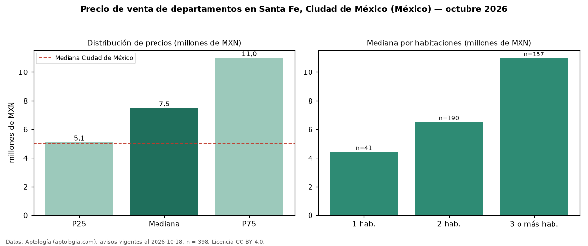

Precio de venta de departamentos en Santa Fe, Ciudad de México (México) — octubre 2026
Con 398 avisos vigentes, el precio mediano de departamentos en venta en Santa Fe, Ciudad de México (México) es MXN 7,50 millones. Eso es 50 % por encima de la mediana de Ciudad de México para departamentos (MXN 4,99 millones). Por metro cuadrado, la mediana es MXN 56.206/m² (n = 382 avisos con área), 5 % por encima de Ciudad de México (MXN 53.447/m²). Por precio mediano es el puesto 7 de 51 colonias de Ciudad de México con al menos 30 avisos de departamentos en venta (MXN): entre las más caras. Con el precio por m² de renta del mismo segmento (MXN 278/m² al mes), la rentabilidad bruta implícita es 5,9 % anual (aproximación con medianas de ofertas distintas). El área mediana anunciada es 140 m². El segmento con más oferta es el de 2 habitaciones (190 avisos, mediana MXN 6,55 millones); pasar de 1 habitación a 3 o más habitaciones cambia la mediana +147 %. La mitad central de los avisos va de MXN 5,12 millones a MXN 11,00 millones (razón 2,1), una dispersión alta. Datos: Aptología (aptologia.com), CC BY 4.0 — https://www.aptologia.com/. Archivos: PDF, CSV con las cifras y gráfica PNG.

| Avisos únicos | 398 |
|---|---|
| Percentil 25 | COP 5.125.000 |
| Mediana | COP 7.500.000 |
| Percentil 75 | COP 10.999.999 |
| Mediana por m² | COP 56.205 |
Fuente: avisos vigentes de portales inmobiliarios recopilados por Aptología, deduplicados (mínimo 30 avisos únicos por celda). Precios pedidos, no cerrados. Fecha: 2026-10-18.